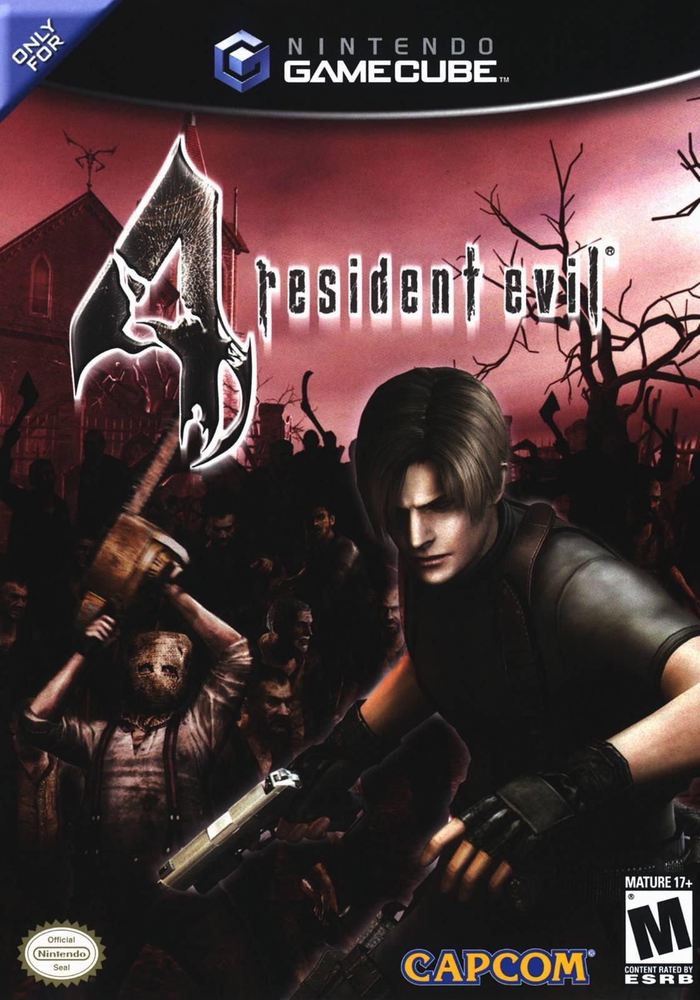
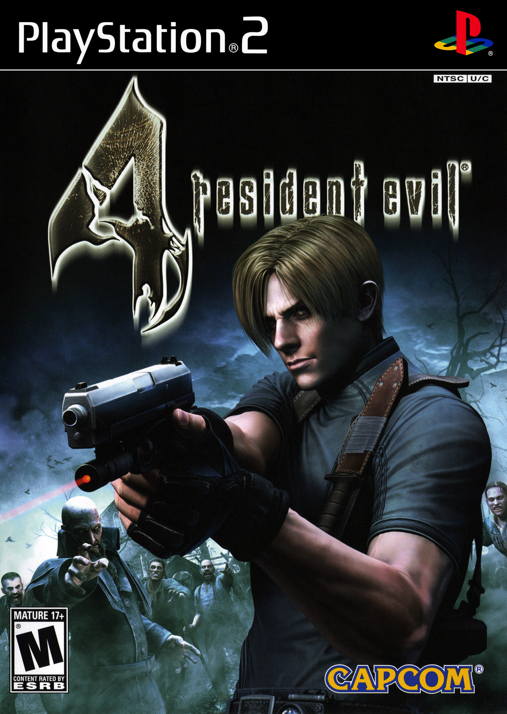
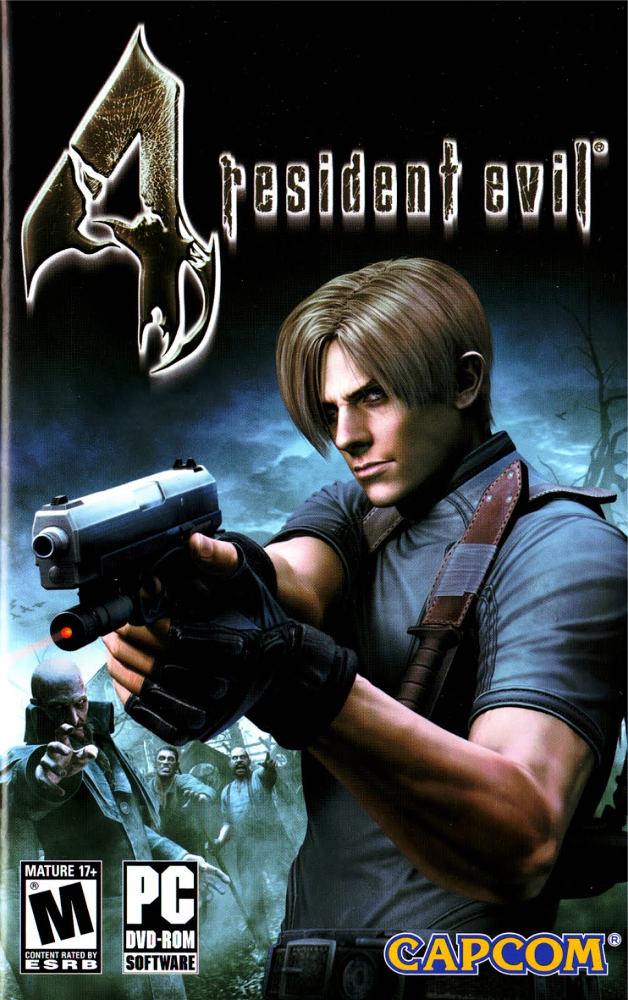
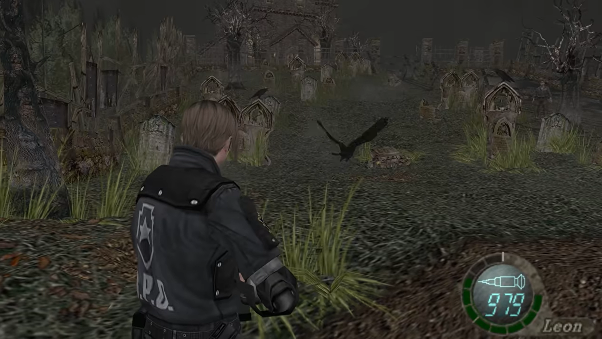
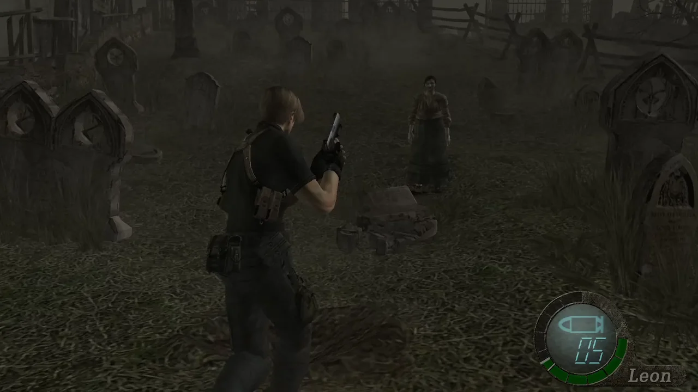
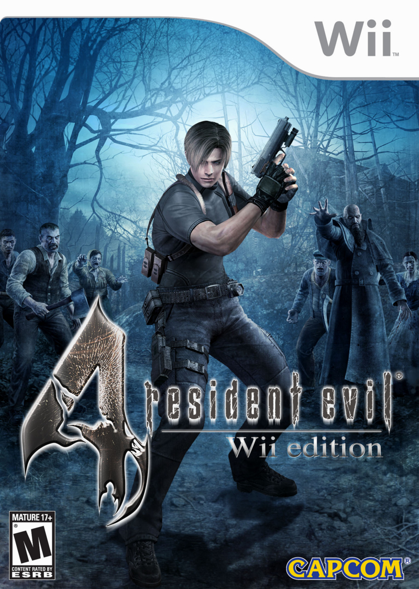
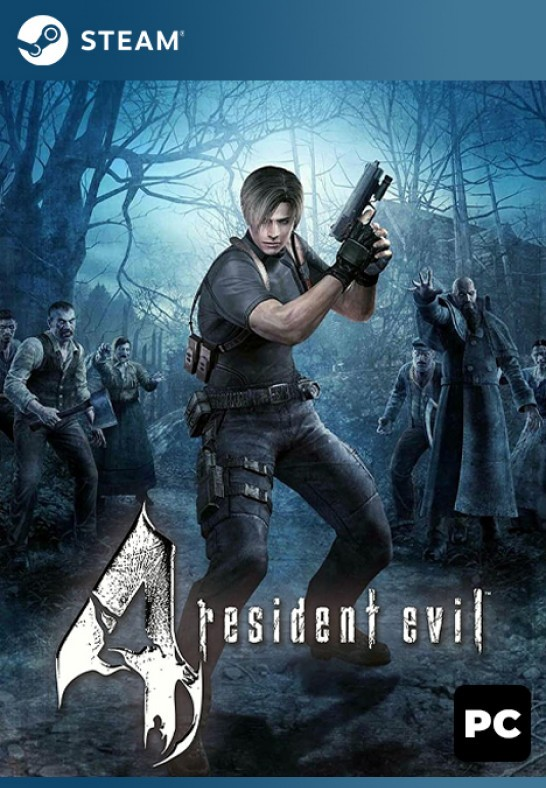
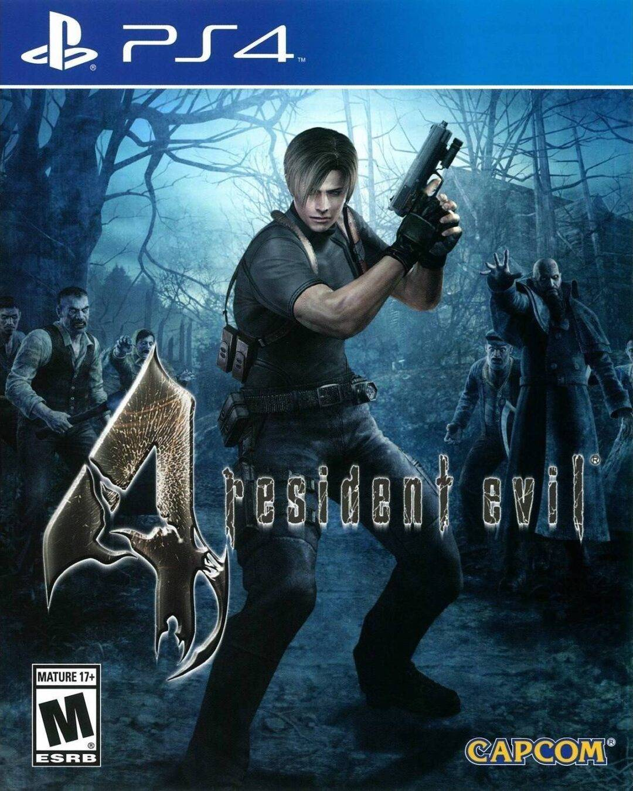
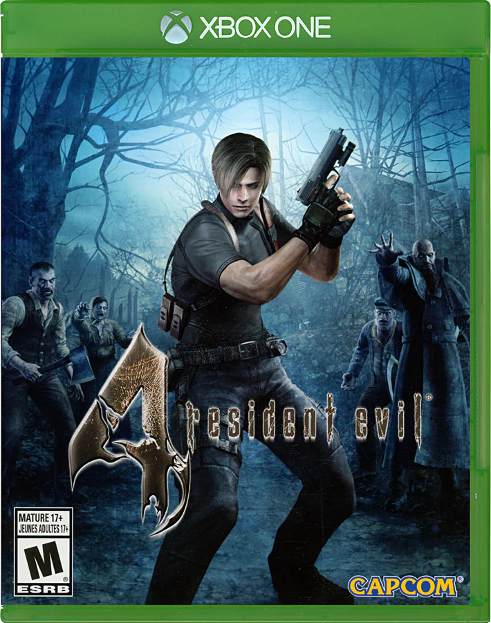
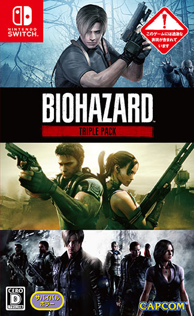

Comparing ports
Every release of this game has its own pros and cons, as well as its own price in the market. The prices that I am providing have been determined using PriceCharting.com, a website that finds the current market value of games by calculating the average price of the most recently sold listings of said games.
I will be providing the prices of the games in CIB (complete in box, meaning that the game has the case as well as any manuals or extras it was originally sold with) and loose (disc only, no case or extras) condition, the specs, release date (which will be for the North American region unless specified to be Worldwide), some miscellaneous information about factors that may affect the gameplay experience, and my overall rating of the version. These ratings can all be seen in the completed tierlist.
Nintendo GameCube (2005)

Starting off with the original release, the GameCube version is a solid option. It was released in North America on January 11th, 2005, with a resolution of 480p and 30 FPS. It has real-time rendered cutscenes and a progressive scan mode which allows a higher video output on modern monitors, but this mode comes at a price: extremely visible dithering.
It’s also notable that this is the only version that doesn’t include Ada’s Separate Ways campaign, and that the weapons in this release have slightly lower damage values than in every other release, meaning that all the enemies are harder to kill. This objectively makes this release to be the most difficult way to play Resident Evil 4.
As of October 13th, 2024, the CIB and loose prices for the GameCube release are $27.01 and $17.99, respectively. I rate this release a 7/10.
PlayStation 2 (2005)

This release is not up to the standards of the GameCube version, but it’s really not as bad as most make it out to be. It was released in North America on October 25th, 2005, with the option to choose between 480i (which is enabled by default) and 480p and 30 FPS. Several sacrifices in graphical and auditory quality have been made, and I presume that these were made to save space to be able to fit in the extra campaign, Separate Ways, that was introduced in this version and is present in all other versions.
Compared to the GameCube, there is a noticeable decrease in audio quality. It appears to be compressed, leading to all the sound effects and music sounding “muddy”. The video is also less defined and colourful, but this is a much less noticeable sacrifice compared to the sound compression. These flaws may not be noticed or cared about by all players, but it’s important to make sure that players are aware of them before they purchase this version to avoid any unnecessary surprises.
Below is a short video clip showcasing the differences between the GameCube’s audio and the PS2’s audio.
Credit:
Video clip is from YouTube channel: Avalanche Reviews
Video Title: Every Port of Resident Evil 4 Compared: RE Retrospective
This release also uses pre-rendered cutscenes instead of real-time cutscenes, meaning that any skins you’ve equipped the characters with will not be visible, as they will be wearing their default outfits. This is a big blow to the game’s immersion, and was the only performance issue that negatively affected my experience when I played it on the PS2.
As of October 13th, 2024, the CIB and loose prices for the PlayStation 2 release are $13.99 and $9.48, respectively. I rate this release a 6/10.
Windows aka SourceNext (2007)

Unlike the PlayStation 2 port, this release is just as bad, if not much worse than people claim it to be. It was released in North America on May 15th, 2007, with a resolution of 1080p and 30 FPS. Unfortunately, its high resolution only works to show how badly they messed up the lighting and fog effects, with no room for interpretation. Throughout the game, these effects are always either greatly diminished or missing entirely. This completely ruins the atmosphere of many areas in the game, most notably the graveyard.
There is no darkness or fog in the SourceNext graveyard, which clearly changes the tone of this entire area and makes it feel much less intimidating. I could keep talking about this but I think it’s clear that this is definitely not how the original developers intended people to experience this game.
Pictured below is a screenshot of the graveyard in the SourceNext release followed by the graveyard as it was originally intended to look.

Image is from Youtube channel Avalanche Reviews from video “Every Port of Resident Evil 4 Compared: RE Retrospective”

Image is from Reddit user Mahboishk from post “[RE4] Going out with style”
Some other things to mention about this release is that while it was made for the pc, you cannot use the mouse to aim, instead being forced to aim with the keyboard. In short, by buying this release you are choosing to play this game in a format that not only looks terrible but plays terribly as well.
As of October 13th, 2024, the CIB and loose prices for the SourceNext release are $12.00 and $5.45, respectively. I rate this release a 1/10.
Nintendo Wii (2007)

The Wii release is one that has surprisingly held up extremely well in the modern day. It was released in North America on June 19th, 2007, with a resolution of 480p and 30 FPS. This release may have a low graphical fidelity, but it makes up with it tenfold with its accessibility. All aiming and shooting in this version is done via the Wii remote’s motion controls, making this version by far the easiest to control and makes the game’s learning curve almost nonexistent, which cannot be said for any other release on this list. However, if you don’t like motion controls, you can attach a GameCube controller to your Wii and use that to play with more traditional controls.
It also has the ability to stretch the video output from 4:3 to 16:9, if that works better on your monitor. However, as the video is being stretched, this will most likely result in a more blurry or generally lower quality output.
As of October 13th, 2024, the CIB and loose prices for the Wii release are $9.29 and $8.25, respectively. I rate this release a 8/10.
Steam (2014)

This release clearly showed that the second time was the charm when porting to the pc. It was released worldwide on February 27th, 2014, with a resolution of 1440p and 60 FPS. It is the true HD version that fans had been waiting for, finally including mouse and usb controller support, and while it did not disappoint, no port is without its flaws.
Higher framerates may seem like a good thing on the surface, but in reality, they can be more of a double-edged sword. Not many mechanics are dependent on the frame rate, but the most noticeable one that is are the quick time events (QTEs) in cutscenes. Since the time window to complete QTEs is tied to the frame rate, when the default frame rate doubled, the time window was halved. This isn’t a huge deal, but I would still consider it a performance issue.
To achieve a better HD look, the developers behind the Steam port upscaled all the textures in the game, but not all the upscaling was done properly. This led to some background textures being lower quality than others, but it’s not bad enough to be actively noticed unless you’re looking for it.
As of October 13th, 2024, the Steam release is only digital and shall forever remain at the price of $19.99. I rate this release a 9/10.
PlayStation 4 and Xbox One (2016)
 
These two releases are being grouped together because they perform exactly the same on both consoles, and share a release date. The release date in question was worldwide on August 30th, 2016 at a resolution of 1080p and 60 FPS. These releases used the Steam edition as a base, so the minor problems with the Steam release have been carried over, but the slightly lower resolution has made the low-quality textures blend together more seamlessly, making them harder to notice. Whether this is a good thing depends on your preference between image resolution and image perception.
As of October 13th, 2024, the CIB and loose prices for the PlayStation 4 and Xbox One releases are $12.99 and $11.95, respectively. I rate both of these releases 9/10.
Nintendo Switch (2019)

The cover of this release is Japanese because Japan was the only region to get a physical copy for the switch, albeit in the form of a triple pack. North Americans can only get the game digitally from the Nintendo Switch online store, which is a shame. The digital version was released worldwide on May 21st, 2019 at a resolution of 900p when connected to a tv and 720p when handheld, all at sub-60 FPS.
I believe that this performance, especially for a modern console, is completely ridiculous. Low video quality can be forgiven when taking into account how small the switch’s screen size is, but not keeping a consistent frame rate on a game that was 12 years old when this port came out is, once again, completely ridiculous. This port could’ve easily glossed over these issues if it had incorporated the motion controls of its Wii predecessor, but there is no option to enable motion controls, even though the Switch’s main controllers, joy-cons, are specifically designed to used in motion control oriented games.
As of October 13th, 2024, the Nintendo Switch release is only digital, and shall forever remain at the price of $19.99. I rate this release a 8/10.